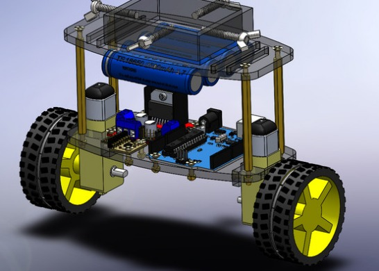

My Projects
Deep-Learning Driven 3D Profilometer


Developed an end-to-end, plug-and-play 3D profilometry system combining:
- Automated Z-axis traversal and synchronized high-throughput imaging with micron-level repeatability.
- ResNet–Attention U-Net segmentation of in-focus regions (mIoU 0.92, 45 ms inference).
- Fuzzy-logic feedback control over EtherCAT achieving ±0.1 µm closed-loop accuracy.
- Variance-weighted focus stacking and Open3D point-cloud reconstruction with RMSE < 0.8 µm.
Tech stack: Python, TensorFlow, OpenCV, Open3D, EtherCAT, Tkinter GUI.
GitHub: View Repository
SLAMDrive UAV

Engineered an autonomous UAV leveraging RetinaNET for weed detection in potato farms (89% accuracy) and human surveillance (97% accuracy) using real-time image processing and SLAM-based mapping.
GitHub: Read More
LSTM-RNN based Emotion Detection System

Engineered a preprocessing pipeline using ICA and bandpass filtering, followed by LSTM-RNN classification on EEG data achieving 85% accuracy on multi-subject recordings.
GitHub: Read More
Holonomic Drive Bot

Coordinated a fleet of holonomic robots for glyph rendering using camera-based localization and ArUco markers, resulting in real-time path adjustments and sub-10cm tracking error.
GitHub: Read More
Self-Balancing Bot

Developed a self-balancing robot using an LQR controller and IMU fusion, capable of traversing slopes up to 15° with stable 0.5° tilt error.
GitHub: Read More